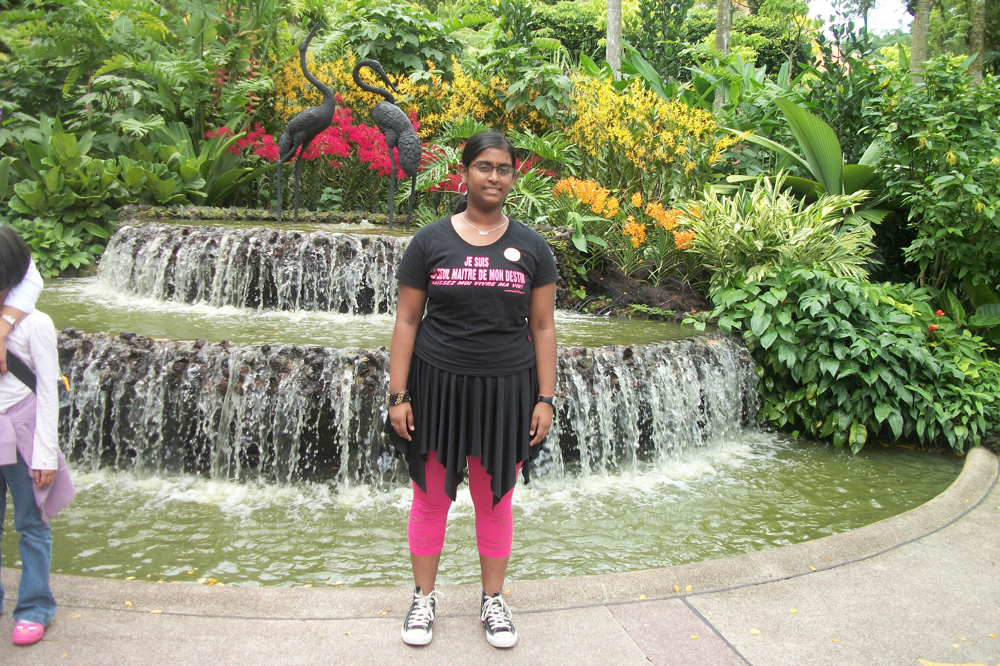
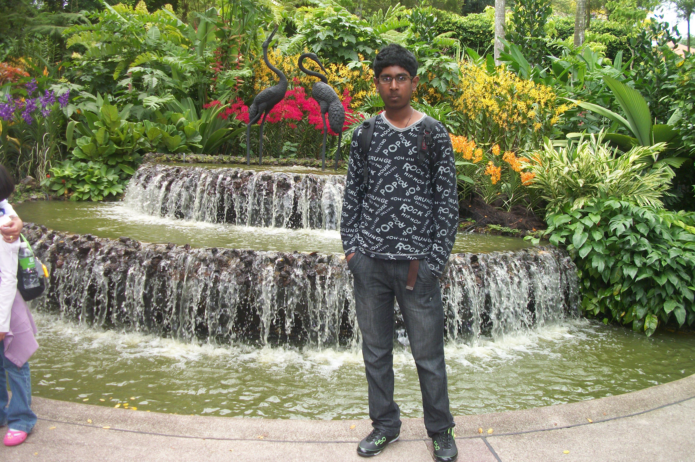

These are pictures of our family when we visited the centaur island in Singapore. It was a 4 day trip to singapore during which we also visted several interesting places, including the universal studio.
Singapore looks very clean and inspite of its high number of people, its roads are neither crowded with cars nor with people. The buses are also not very crowded. The light-rail system in Singapore is interesting and easy to use. It is the main means of public transport in Singapore.
In Singapore, most multinational food companies such as Macdonald, KFC and starbucks are present. There is also a large variety of local foods, all forms of noodles, in different combinations, each one more tasty than the other ones. A large variety of fried noodles with varying combinations as well as a large variety of boiled noodles.
One problem with Singapore was the cost of living. Life is quite expensive in Singapore. Even 3-star hotels are rather expensive
After singapore, we went to Malaysia for 5 days and Hong Kong for 3 days. In Malaysia, we visited the Time Square, the Batu caves and a number of places of historical interests. KL was a great place but extremely crowded. We wanted to visit the twin towers but there was a long queue from the early morning.
In Malaysia, public transport is not as easy as in Singpore. The trains are not as long as in Singapore. They have only very few wagons and they also do not cover the whole area. The busses are crowded and do not seem very confortable. The easiest thing to do was to travel by taxis. However the roads are so crowded that the taxi seems to take an eternity to move from one place to another.
Food is plentiful in Malaysia. The streets are full of open-restaurant type space with a large variety of all types of dishes and the costs are very affordable. One can pruchase a briani or fried rice for the cost of 10 ringit, which is less than 4 CAD.
However, the hotel in Malaysia was very nice for its price. We obtain a 4-star hotel in Malaysia for lower cost than a 3-star in Singapore. The cost of living in Malaysia is also much less than Singapore. It is thus ideal for shopping. Moreover you can generally bargain on the prices,- a practice which is frowned upon in Singapore.
Another very interesting charateristic of Malaysia, specially Kuala Lampur, is the number of feet massage saloons available. The street in which our hotel was located was full of such saloon, not less than 20 in a distance of scarecely 400m. One cannot resist the temptation of having a nice feet massage.
Hong Kong was also great. We visited the Ocean park, the disney land and had interesting rides in roller coasters. The roller coasters were very impressive, specially the mining train which at a point in time, gives the feeling of a free fall, which is particularly scary. There were also the rides in the swift river that was extremely interesting
Travelling in Hong Kong was more challenging due to the language barrier. we travelled by Taxis but had difficulties communicating with the drivers. The hotel people were very helpful, they actually made required arrangements for taxis for us, gave the address of the places and informed us of the price. Then we travelled and paid on reaching our destinations. The taxi drivers were generally honest.